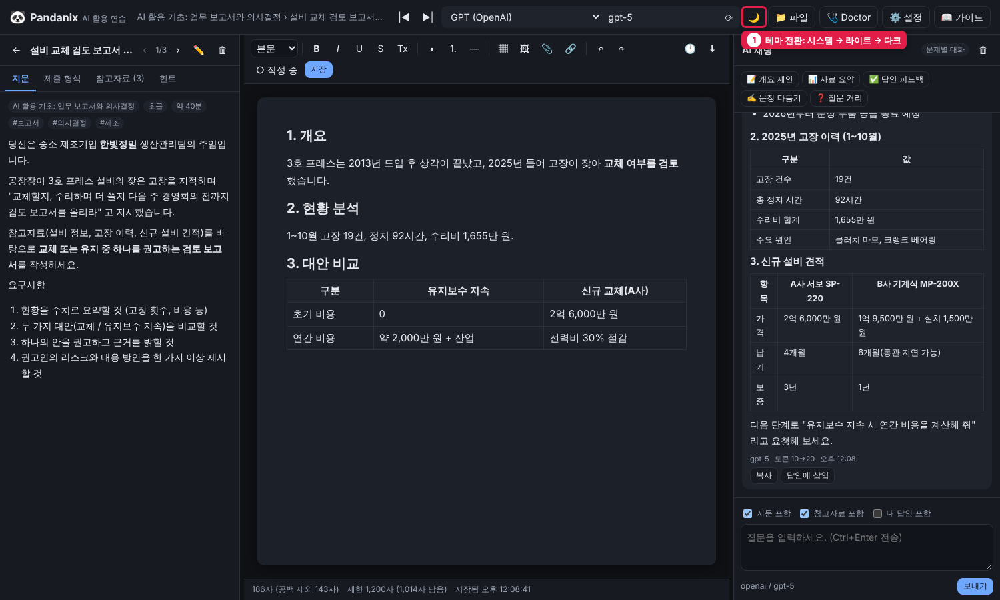
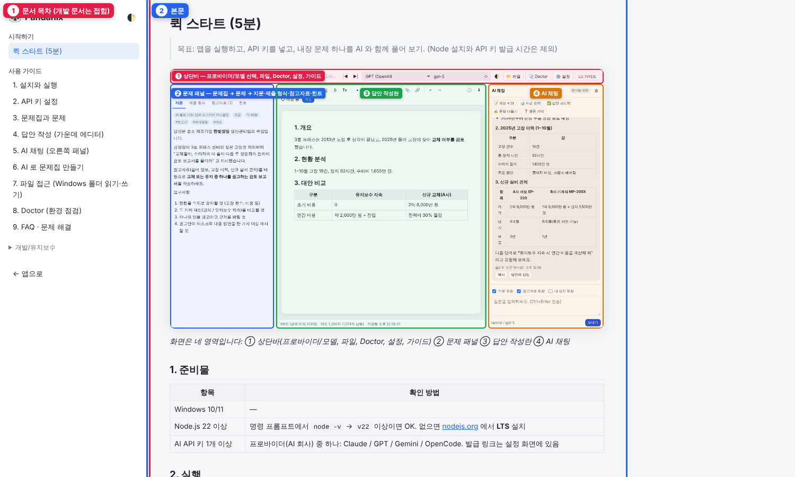

1. 설치와 실행
설치
- Node.js LTS 설치 (22 이상, 내부 AI SDK 요구사항). 설치 후 새 명령 프롬프트에서
node -v로 확인 - 프로젝트 폴더를 원하는 위치에 두기 (예:
C:\Pandanix). 경로에 한글이 있어도 됩니다 start.bat실행 → 처음 1회npm install자동 수행
수동 설치:
cd C:\Pandanix
npm install
npm start실행 방법 비교
| 방법 | 언제 |
|---|---|
start.bat | 평소. 브라우저 자동 열림 |
npm start | 터미널에서 로그를 보며 실행 |
npm run dev | 개발 중. 서버 파일이 바뀌면 자동 재시작 |
다크 모드
상단바의 🌓 버튼을 누를 때마다 시스템 설정 따름 → ☀️ 라이트 → 🌙 다크 순으로 바뀝니다. 선택은 브라우저에 기억되고, 앱·가이드 뷰어·HTML 가이드에 모두 적용됩니다. "시스템" 은 Windows 의 앱 모드(설정 → 개인 설정 → 색) 를 따릅니다.

가이드 보기
상단바 📖 가이드 를 누르면 이 문서들을 앱 안에서 볼 수 있습니다. 오프라인용 HTML 은 docs/html/index.html 입니다.

종료
서버 창에서 Ctrl+C 또는 창 닫기. 작성 중인 답안은 자동 저장되어 있습니다.
포트 바꾸기
기본 포트는 3210. 바꾸려면 둘 중 하나:
data/config/settings.json의"port"수정- 실행 시 환경변수:
set PORT=3300 && npm start
데이터 폴더 위치 바꾸기
기본은 <프로젝트>\data. 다른 위치(예: OneDrive)에 두려면 환경변수 PANDANIX_DATA_DIR 지정:
set PANDANIX_DATA_DIR=D:\PandanixData
start.bat업데이트
새 버전 파일로 덮어쓴 뒤 npm install 한 번. data/ 폴더는 건드리지 않으므로 문제집·답안·키가 유지됩니다. 새로 추가된 내장 문제집은 자동 설치되지 않으니 왼쪽 📚 내장 문제집 에서 설치하세요.
백업
data/ 폴더를 통째로 복사하면 끝입니다. (키 파일 credentials.json 포함 여부에 주의)